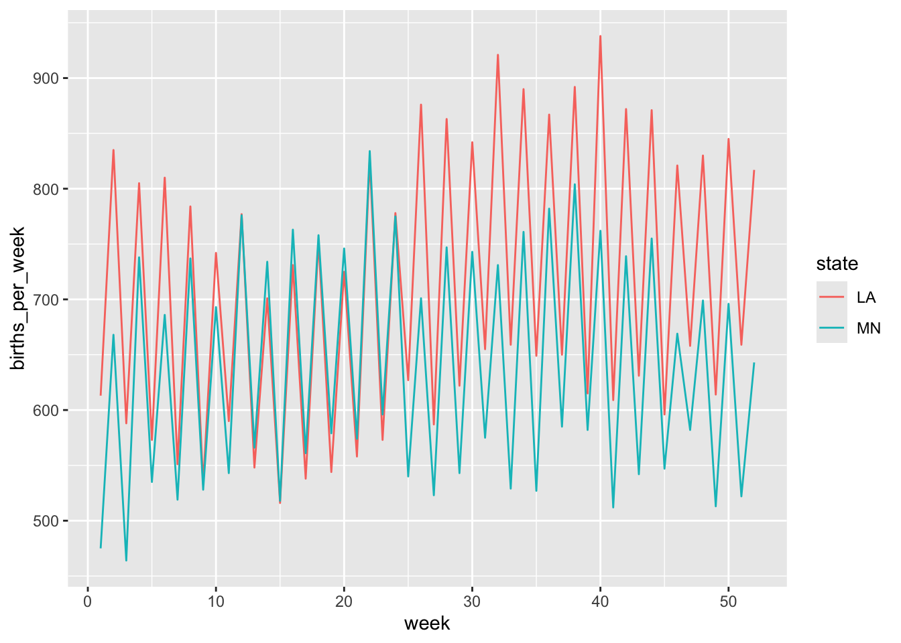

Rows: 344 Columns: 8
── Column specification ────────────────────────────────────────────────────────
Delimiter: ","
chr (3): species, island, sex
dbl (5): bill_length_mm, bill_depth_mm, flipper_length_mm, body_mass_g, year
ℹ Use `spec()` to retrieve the full column specification for this data.
ℹ Specify the column types or set `show_col_types = FALSE` to quiet this message.
na.omit() should only be used in very specific circumstances because it eliminates data sets with any NA values, so it can eliminate useful data. If a data point is NA for only one variable and we aren’t looking at that, na.omit() will take it out and slightly skew our data for a reason that wouldn’t have affected the observations we’re looking for. NA values should for the most part only be omitted when they are in columns we aren’t using.
# Change this code to sort the penguins by species, and then island name# NOTE: The first row should be an Adelie penguin living on Biscoe islandpenguins |>arrange(species) |>arrange(island)
# Change this code to count the number of male/female penguins observed for each speciespenguins |>count(species, sex)
# A tibble: 8 × 3
species sex n
<chr> <chr> <int>
1 Adelie female 73
2 Adelie male 73
3 Adelie <NA> 6
4 Chinstrap female 34
5 Chinstrap male 34
6 Gentoo female 58
7 Gentoo male 61
8 Gentoo <NA> 5
# Change this code to calculate the average body mass by species and sexpenguins |>group_by(species) |>summarize(mean =mean(body_mass_g, na.rm =TRUE))
# A tibble: 3 × 2
species mean
<chr> <dbl>
1 Adelie 3701.
2 Chinstrap 3733.
3 Gentoo 5076.
7.4 Exercise 4: Dates
# Get today's dateas.Date(today())
[1] "2025-03-13"
# Let's store this as "today" so we can work with it belowtoday <-as.Date(today())# Check out the class of this objectclass(today)
[1] "Date"
# year of today's dateyear(today)
[1] 2025
# month number of today's datemonth(today)
[1] 3
# month name of today, shows levels - order - of different monthsmonth(today, label =TRUE)
[1] Mar
12 Levels: Jan < Feb < Mar < Apr < May < Jun < Jul < Aug < Sep < ... < Dec
# week number out of year of todayweek(today)
[1] 11
# day number of the month of todaymday(today)
[1] 13
# day number of the year of todayyday(today)
[1] 72
# day number of the week of todaywday(today)
[1] 5
# abbr. day of the week of today with levels/order of days of the weekwday(today, label =TRUE)
[1] Thu
Levels: Sun < Mon < Tue < Wed < Thu < Fri < Sat
# is today after or equal to 2/14 true or false, is today before 2/14 true or falsetoday >=ymd("2024-02-14")
[1] TRUE
today <ymd("2024-02-14")
[1] FALSE
7.5 Exercise 5: Warming Up
library(mosaic)
Registered S3 method overwritten by 'mosaic':
method from
fortify.SpatialPolygonsDataFrame ggplot2
The 'mosaic' package masks several functions from core packages in order to add
additional features. The original behavior of these functions should not be affected by this.
Attaching package: 'mosaic'
The following object is masked from 'package:Matrix':
mean
The following objects are masked from 'package:dplyr':
count, do, tally
The following object is masked from 'package:purrr':
cross
The following object is masked from 'package:ggplot2':
stat
The following objects are masked from 'package:stats':
binom.test, cor, cor.test, cov, fivenum, IQR, median, prop.test,
quantile, sd, t.test, var
The following objects are masked from 'package:base':
max, mean, min, prod, range, sample, sum
data("Birthdays")head(Birthdays)
state year month day date wday births
1 AK 1969 1 1 1969-01-01 Wed 14
2 AL 1969 1 1 1969-01-01 Wed 174
3 AR 1969 1 1 1969-01-01 Wed 78
4 AZ 1969 1 1 1969-01-01 Wed 84
5 CA 1969 1 1 1969-01-01 Wed 824
6 CO 1969 1 1 1969-01-01 Wed 100
# How many days of data do we have for each state?Birthdays |>filter(state =="CA") |>nrow()
[1] 7325
# How many total births were there in this time period?Birthdays |>summarise(sum(births))
sum(births)
1 70486538
# How many total births were there per state in this time period, sorted from low to high?Birthdays |>group_by(state) |>summarise(total =sum(births)) |>arrange(total)
# A tibble: 51 × 2
state total
<chr> <int>
1 VT 147886
2 WY 154019
3 AK 185385
4 DE 188705
5 SD 235734
6 ND 238696
7 NV 241470
8 MT 253884
9 NH 264984
10 RI 265038
# ℹ 41 more rows
`summarise()` has grouped output by 'date'. You can override using the
`.groups` argument.
ggplot(daily_births, aes(x = date, y = total_births, color = wday)) +geom_point() +scale_fill_viridis_d() +labs(title ="US Births Per Day Over Time", x ="Date", y ="Number of Births", color ="Day of the Week")
7.7 Exercise 7: Wrangle & Plot
7.7.1 Part A
# total births for each month/year Jan 1969, plot births by monthmonth_year_births <- daily_births |>mutate(year =year(date)) |>mutate(month =month(date, label =TRUE)) |>mutate(date =paste(month, year)) |>group_by(date, month) |>summarise(all_births =sum(total_births))
`summarise()` has grouped output by 'date'. You can override using the
`.groups` argument.
ggplot(month_year_births, aes(x = date, y = all_births, color = month)) +geom_point()
There doesn’t seem to be any connection between the month or year and the total number of births.
7.7.2 Part B
# 1988 births per week for each statebirths_1988 <- Birthdays |>filter(year ==1988) |>mutate(week =week(date)) |>filter(week !=53) |>group_by(week, state) |>summarise(births_per_week =sum(births))
`summarise()` has grouped output by 'week'. You can override using the
`.groups` argument.
ggplot(births_1988, aes(x = week, y = births_per_week, color = state)) +geom_line()
ggplot(births_1988, aes(x = week, y = births_per_week)) +geom_line() +facet_wrap(~state)
Looking at the graphs with the states differentiated by color and by facets, states like California, Texas, and New York have the highest birth rates, with California as the main outlier. They are higher populated states so it makes sense that their birth rates are higher. There is a slight spike around week 35-40, and this pattern is most recognizable among states with higher births per week, but there aren’t any other clear patterns.
`summarise()` has grouped output by 'week'. You can override using the
`.groups` argument.

These two states have pretty much identical birthrate patterns. During the first ten weeks of the year and the latter half of the year Louisiana has a consistently higher birth rate.
Warning: There was 1 warning in `filter()`.
ℹ In argument: `day == c("9", "10", "11", "12")`.
Caused by warning in `day == c("9", "10", "11", "12")`:
! longer object length is not a multiple of shorter object length
# A tibble: 5 × 2
state total
<chr> <int>
1 CA 2138
2 NY 1354
3 IL 1139
4 PA 974
5 MI 807
Source Code
---title: "Dates"format: html---## Exercise 1### Part A```{r}library(tidyverse)penguins <-read_csv('https://raw.githubusercontent.com/rfordatascience/tidytuesday/master/data/2020/2020-07-28/penguins.csv')penguins |>filter(species %in%c("Adelie", "Chinstrap")) |>count(species)penguins |>filter(species !="Gentoo") |>count(species)```### Part B```{r}penguins_w_body_mass <- penguins |>filter(!is.na(body_mass_g))nrow(penguins)nrow(penguins_w_body_mass)penguins_complete <- penguins |>na.omit()nrow(penguins_complete)```### Part Cna.omit() should only be used in very specific circumstances because it eliminates data sets with *any* NA values, so it can eliminate useful data. If a data point is NA for only one variable and we aren't looking at that, na.omit() will take it out and slightly skew our data for a reason that wouldn't have affected the observations we're looking for. NA values should for the most part only be omitted when they are in columns we aren't using.## Exercise 2```{r}names(penguins)# Use a shortcut to keep everything but the year and island variablespenguins |>select(-year, -island)# Use a shortcut to keep only species and the penguin characteristics measured in mmpenguins |>select(species, contains("mm"))# Use a shortcut to keep only species and bill-related measurementspenguins |>select(species, contains("bill"))# Use a shortcut to keep only species and the length-related characteristicspenguins |>select(species, contains("length"))```## Exercise 3```{r}# Change this code to sort the penguins by species, and then island name# NOTE: The first row should be an Adelie penguin living on Biscoe islandpenguins |>arrange(species) |>arrange(island)# Change this code to count the number of male/female penguins observed for each speciespenguins |>count(species, sex)# Change this code to calculate the average body mass by species and sexpenguins |>group_by(species) |>summarize(mean =mean(body_mass_g, na.rm =TRUE))```## Exercise 4: Dates```{r}# Get today's dateas.Date(today())# Let's store this as "today" so we can work with it belowtoday <-as.Date(today())# Check out the class of this objectclass(today)# year of today's dateyear(today)# month number of today's datemonth(today)# month name of today, shows levels - order - of different monthsmonth(today, label =TRUE)# week number out of year of todayweek(today)# day number of the month of todaymday(today)# day number of the year of todayyday(today) # day number of the week of todaywday(today)# abbr. day of the week of today with levels/order of days of the weekwday(today, label =TRUE)# is today after or equal to 2/14 true or false, is today before 2/14 true or falsetoday >=ymd("2024-02-14")today <ymd("2024-02-14")```## Exercise 5: Warming Up```{r}library(mosaic)data("Birthdays")head(Birthdays)# How many days of data do we have for each state?Birthdays |>filter(state =="CA") |>nrow()# How many total births were there in this time period?Birthdays |>summarise(sum(births))# How many total births were there per state in this time period, sorted from low to high?Birthdays |>group_by(state) |>summarise(total =sum(births)) |>arrange(total)```## Exercise 6: Homework Reprise```{r}daily_births <- Birthdays |>group_by(date, wday) |>summarise(total_births =sum(births))ggplot(daily_births, aes(x = date, y = total_births, color = wday)) +geom_point() +scale_fill_viridis_d() +labs(title ="US Births Per Day Over Time", x ="Date", y ="Number of Births", color ="Day of the Week")```## Exercise 7: Wrangle & Plot### Part A```{r}# total births for each month/year Jan 1969, plot births by monthmonth_year_births <- daily_births |>mutate(year =year(date)) |>mutate(month =month(date, label =TRUE)) |>mutate(date =paste(month, year)) |>group_by(date, month) |>summarise(all_births =sum(total_births))ggplot(month_year_births, aes(x = date, y = all_births, color = month)) +geom_point()```There doesn't seem to be any connection between the month or year and the total number of births. ### Part B```{r}# 1988 births per week for each statebirths_1988 <- Birthdays |>filter(year ==1988) |>mutate(week =week(date)) |>filter(week !=53) |>group_by(week, state) |>summarise(births_per_week =sum(births))ggplot(births_1988, aes(x = week, y = births_per_week, color = state)) +geom_line()ggplot(births_1988, aes(x = week, y = births_per_week)) +geom_line() +facet_wrap(~state)```Looking at the graphs with the states differentiated by color and by facets, states like California, Texas, and New York have the highest birth rates, with California as the main outlier. They are higher populated states so it makes sense that their birth rates are higher. There is a slight spike around week 35-40, and this pattern is most recognizable among states with higher births per week, but there aren't any other clear patterns.### Part C```{r}Birthdays |>filter(year ==1988) |>filter(state ==c("MN", "LA")) |>mutate(week =week(date)) |>filter(week !=53) |>group_by(week, state) |>summarise(births_per_week =sum(births)) |>ggplot(aes(x = week, y = births_per_week, color = state)) +geom_line()```These two states have pretty much identical birthrate patterns. During the first ten weeks of the year and the latter half of the year Louisiana has a consistently higher birth rate. ## Exercise 8### Part A```{r}births_MA <- Birthdays |>filter(state =="MA") |>filter(year ==1979) |>arrange(desc(births))```### Part B```{r}Birthdays |>filter(year =="1979") |>filter(month =="9") |>filter(day ==c("9", "10", "11", "12")) |>group_by(state) |>summarise(total =sum(births)) |>arrange(desc(total)) |>head(5)```